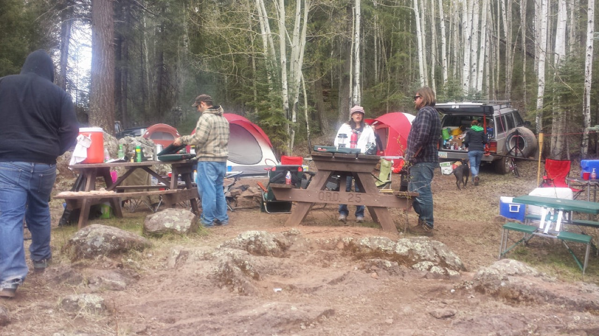

A camp kitchen that works from dinner to dishes
Pack around a meal, not every utensil you own. Give clean hands, cold food, preparation, cooking and cleanup a place before the first wrapper comes off.

Start with tonight's dinner
Write down what you need to prepare, cook, serve and clean that meal. If an item has no job for the meals you planned, it does not automatically belong in the kitchen box.
Keep one prep surface clear. Set water and soap out before touching food. Give dirty dishes somewhere to land that is not the cutting board.
Choosing equipment? The camp kitchen gear guide covers the buying decisions. This page covers the work.
Set up four working areas
| Area | Put here | Keep separate |
|---|---|---|
| Clean water and hands | Stable jug with spigot, soap, clean drying supplies and catch basin. | Wastewater, dirty dishes and food preparation. |
| Cold food and prep | Cooler, food bin, clear board, knife and the current meal's ingredients. | Raw-meat packaging and ready-to-eat food. |
| Cooking and serving | Stable outdoor stove position, required clearances, appropriate cookware and a heat-safe landing spot. | Walking routes, loose fabric, paper, spare fuel and children reaching for snacks. |
| Cleanup | Scraper, contained trash, wash and rinse supplies, drying space and wastewater container. | Clean plates, drinking-water openings and the stove. |
The areas need not be four tables. Keep the picnic table useful and place cleanup off to the side. If traffic keeps crossing the hot-pan route, move the chairs or food pickup point. Do not ask the cook to work around a constant obstacle.
Portable outdoor stoves stay outdoors. Do not move one into a tent or vehicle because of wind or rain. Use the stove's specified clearances and wind protection, and follow current local restrictions. Switch to a no-cook meal when the cooking location is unsuitable.
Make handwashing easy to use
Place the jug securely at a usable height, with enough room below the spigot for both hands. Put a basin beneath it and keep soap and clean drying supplies within reach. Empty the basin before it overflows; it is not a place to rinse dishes.
Wet hands with clean running water, apply soap, scrub for at least 20 seconds, rinse and dry with a clean towel. Wash before food preparation and eating, after bathroom trips, and after handling raw food or trash. Sanitizer with at least 60% alcohol is a fallback when soap and water are unavailable, not a replacement for building a usable station. CDC handwashing guidance.
Pack the cooler for food, not browsing
Pre-chill the cooler and food, then pack with enough ice, frozen bottles or cold packs to maintain temperature. Use sealed containers; keep raw meat below and separate from ready-to-eat food. Group ingredients by meal so dinner is one retrieval, not a long search.
Keep a thermometer in the cooler and hold perishables at 40°F or below. Discard perishables held above 40°F for more than two hours; use a one-hour limit when outdoor temperatures exceed 90°F. If you cannot establish that food stayed safe, do not taste it to decide. USDA camping food guidance.
Separate frequent-access drinks when practical, keep the cooler shaded and close the lid promptly. Ice still being visible is not a substitute for checking temperature.
A worked example: bean-and-cheese tortillas
For this simple meal, pack a pan, spatula, plates, an opener if needed, tortillas, canned beans, cheese and salsa. Keep ingredients requiring refrigeration cold until needed.
- RetrieveOne meal’s ingredients and tools.
- PrepareClean hands and a clear board.
- Cook & serveHot pan to a heat-safe spot; food to clean plates.
- Clean & storeScraps contained; dishes washed; food secured.
Try the layout before lighting: stand where you will cook. Reach for the spatula, point to the hot-pan landing spot, then walk a used plate to cleanup. Move any chair or bin that makes those jobs cross the serving queue.
Retrieve before lighting
Wash hands. Take out the pan, spatula and plates, then the ingredients. Close the cooler. Open packaging over the work surface and contain the waste immediately.
Use the clear surface
Assemble only the amount you are about to cook. Keep the serving plates away from packaging and return unused chilled ingredients promptly. If your meal includes raw meat, use separate handling and follow its food-specific temperature requirements; do not copy this simple workflow without adding those controls.
Cook with a landing spot ready
Cook in batches according to the food's instructions, keeping the pan handle out of the walkway. Put finished food on clean plates. Turn the stove off when finished and keep people away from the hot equipment while it cools.
Do not leave the cleanup until breakfast
Contain food and scraps, scrape the pan and plates, then wash them. A small meal makes a small cleanup only if food dries on neither the cookware nor the prep surface.
Dishes: scrape first, then use water
Have the disposal plan before making a basin of wastewater. At a developed campground, use the designated dishwashing or gray-water facility and follow posted instructions. Do not assume a bathroom sink, toilet, storm drain or the bushes behind your site is the approved destination.
- Scrape food into contained trash. Wipe heavy grease from cookware before washing so it does not spread through the basin.
- Wash, then rinse with clean water. Start with less dirty items and leave greasy pans until last. Change dirty wash water as needed. Keep clean dishes away from the dirty landing area.
- Let dishes dry on a clean rack or surface. Do not wipe them with the cloth that just cleaned the table. If you use a sanitizer, follow that product's food-contact directions rather than guessing a concentration.
- Strain wastewater. Put captured scraps in the trash, then dispose of the water as the site requires.
Where local rules permit dispersed disposal, Leave No Trace recommends washing at least 200 feet from streams or lakes, using small amounts of biodegradable soap and scattering strained dishwater. If the area requires packing wastewater out, bring a suitable container. “Biodegradable” does not mean soap belongs in the lake. Leave No Trace waste guidance.
Close the kitchen before leaving it
Finish these jobs before a walk or bedtime. A cooler beside the table is not automatically wildlife-secure storage. Ticks are not saved by the site.